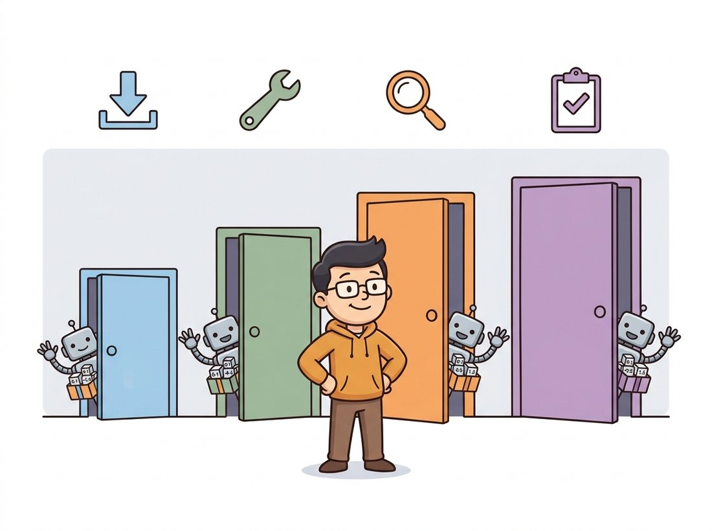

"I have been pretrained on a million images, packaged with my own normalization constants, signed, versioned, and uploaded. All you have to do is import me correctly. You will not import me correctly."
A Pretrained Backbone Who Has Seen This Before
Four libraries are the front doors to almost every pretrained vision model you will ever use, and they differ less in what they can do than in how much they decide for you. torchvision is the official baseline that ships with PyTorch. timm is the enthusiast's collection of hundreds of backbones with a uniform API. Hugging Face is the cross-modal hub where transformer-based and vision-language models live. Ultralytics is the convenience layer that turns detection and segmentation into a single function call. Knowing their boundaries is the difference between five minutes and a wasted afternoon. The illustration below sketches the four front doors into one shared room.

Every chapter in Part III ended by reaching for one of these libraries. Chapter 20 loaded a ResNet from torchvision; Chapter 22 pulled a ViT from timm; Chapter 23 ran a YOLO detector through Ultralytics. We never paused to ask why four libraries exist for what looks like one job, "give me a pretrained vision model", or which one to open first. This section is that pause. We compare their model coverage, their loading APIs, their licenses, and the single most common bug that crosses all four: feeding a model the wrong preprocessing. The recurring theme is that these are not competitors so much as overlapping circles, and fluency means knowing which circle a given model lives in.
1. The Four Front Doors Beginner
Start with a mental map. The four libraries sit at different points on a single axis that runs from "official and conservative" to "broad and bleeding-edge", and on a second axis from "one task, maximum convenience" to "any task, full control". Figure 29.1.1 places them, and the rest of the section fills in the detail.
Take the four in two pairs, the conservative pair first. torchvision is maintained by the PyTorch team and installs alongside it. It offers a curated, stable set of classification backbones (ResNet, EfficientNet, ConvNeXt, ViT, Swin), detection models (Faster R-CNN, RetinaNet, FCOS), segmentation models (DeepLabV3, Mask R-CNN), the dataset classes, and the transforms. It is the conservative choice: fewer models, but every one is documented, weight-versioned, and unlikely to break. timm, now hosted under the Hugging Face organization, is the work of Ross Wightman and contributors and is the largest single collection of image-classification backbones anywhere, well over a thousand pretrained variants under one API, with a benchmarking culture that keeps it current within weeks of a new architecture.
The second pair trades breadth of modality for, respectively, reach and convenience. Hugging Face Transformers generalizes the hub idea across modalities: detection (DETR, the DEtection TRansformer), segmentation (Mask2Former, and SAM, the Segment Anything Model), depth, and the vision-language models (CLIP, BLIP) that classical libraries never covered. Ultralytics is the narrowest and the most convenient: it wraps the YOLO family for detection, segmentation, pose, and classification behind a single call, trading flexibility for the shortest path from image to boxes.
| Library | Primary coverage | Loading idiom | License note | Reach for it when |
|---|---|---|---|---|
| torchvision | Curated classification, detection, segmentation | torchvision.models.resnet50(weights=...) | BSD-3, permissive | You want a stable, documented baseline shipped with PyTorch |
| timm | 1000+ classification backbones | timm.create_model(name, pretrained=True) | Apache-2.0 | You need the newest or an exotic backbone, or a feature extractor |
| Hugging Face | Transformers, detection, segmentation, vision-language | AutoModel.from_pretrained(repo_id) | Per-model on the Hub | The model is transformer-based or multimodal (DETR, SAM, CLIP) |
| Ultralytics | YOLO detection, segmentation, pose | YOLO("yolo11n.pt")(image) | AGPL-3.0 (or commercial) | You want detection results in three lines, training optional |
The license column in Table 29.1.1 is not a footnote. torchvision and timm are permissively licensed, so their weights and code can go into a closed commercial product without obligation. Ultralytics is licensed AGPL-3.0, which requires that you open-source any application that depends on it (including networked services) unless you buy a commercial license. This catches teams late: a prototype built on a YOLO one-liner is fine, but shipping it inside a proprietary product is a legal decision, not just a technical one. Always check the license of both the library and the specific weights before a model leaves the prototype stage.
An AGPL-3.0 license has been described, only half in jest, as the model that "follows you home". The license travels with the weights into any product that imports the library, and because it counts a networked service as distribution, even a model you never ship as a binary can trigger the open-source obligation through an API endpoint. More than one startup has discovered at due diligence that its crown-jewel detector quietly obligated it to publish the surrounding service. The lawyers, not the GPU, are the bottleneck that day.
2. torchvision: The Official Baseline
torchvision's modern API (since version 0.13) attaches weights to a typed enum (a fixed set of named, predefined options, here one name per available weight set), and crucially, each weight object carries the exact preprocessing it expects. This is the design that makes the preprocessing-mismatch bug avoidable, if you use it. The pattern is to ask the weights object for its own transform rather than guessing the normalization constants.
# Load a ResNet-50 from torchvision's weights-enum API and read the
# preprocessing transform directly off the weights object, so the input
# normalization always matches what the pretrained model expects.
import torch
from torchvision.models import resnet50, ResNet50_Weights
# Pick a specific weight set. IMAGENET1K_V2 uses the improved training recipe.
weights = ResNet50_Weights.IMAGENET1K_V2
model = resnet50(weights=weights)
model.eval()
# The weights object KNOWS its own preprocessing. Never hand-roll the constants.
preprocess = weights.transforms()
print(preprocess)
# ImageClassification(
# crop_size=[224], resize_size=[232],
# mean=[0.485, 0.456, 0.406], std=[0.229, 0.224, 0.225], ...)
# The category names are attached too, so you can read predictions directly.
categories = weights.meta["categories"]
print(categories[281]) # 'tabby, tabby cat'
weights.transforms() for the preprocessing pipeline, rather than copying mean and std from a blog post, is the single habit that prevents the most common accuracy-killing bug in transfer learning. The meta dictionary also carries the class-name list and the documented top-1 accuracy.
Notice what we did not write: no manual Resize, no remembered ImageNet mean and standard deviation, no separate class-label file. The IMAGENET1K_V2 weights even use a different resize size (232, not the older 256) because they were trained with a different recipe, exactly the kind of detail that a hand-copied transform gets wrong. This connects back to the transfer-learning workflow of Chapter 21: the preprocessing must match what the model saw during pretraining, or the input distribution shifts and accuracy collapses for no visible reason.
The most common silent failure in transfer learning is feeding a pretrained model the wrong normalization. A model trained on inputs normalized to ImageNet statistics, given inputs in the raw $[0, 1]$ range or normalized to the wrong mean and standard deviation, sees a distribution it never trained on. The model still runs, produces plausible-looking logits, and can report a top-1 accuracy many points below its published number (often a swing of ten points or more, depending on how far the normalization drifts), with no error message anywhere. Every modern library exposes the model's expected transform; the reliable fix is to ask the library for it instead of guessing.
The preprocessing-mismatch bug is far more memorable once you have made it happen on purpose. Take the ResNet-50 from Code Fragment 1 and a few hundred ImageNet validation images, then run inference twice. First feed the model images preprocessed with the correct weights.transforms() pipeline and record top-1 accuracy. Then feed it images that are only resized to 224 and divided by 255, skipping the mean-and-standard-deviation normalization, and record accuracy again. Watch the number drop sharply with no error raised anywhere. For a sweep that builds real intuition, interpolate the normalization: scale the ImageNet mean and standard deviation by a factor you vary from $0.0$ (no normalization) through $1.0$ (correct) and plot accuracy against that factor. Observe how the accuracy climbs toward the published figure exactly as the normalization approaches the values the weights expect, which makes visible that the model has no tolerance for an input distribution it never saw. The whole experiment runs on CPU in a couple of minutes and needs no training.
3. timm: The Backbone Collection Intermediate
timm is where you go when torchvision does not have the architecture you want, which, for anything published in the last year, is often. Its uniform API means that swapping a ResNet for a ConvNeXt or a MaxViT is a one-string change, and it solves the preprocessing problem with a per-model config that you resolve into a transform. Its other superpower, used constantly in detection and segmentation, is turning any backbone into a multi-scale feature extractor with one flag, the feature-pyramid input that Chapter 24 relied on.
# Load any timm backbone by name, resolve its matching preprocessing config,
# then re-load the same architecture as a multi-scale feature extractor that
# returns stride-8/16/32 maps instead of classification logits.
import timm
import torch
# Any of timm's 1000+ models by name. Swapping architectures is one string.
model = timm.create_model("convnext_tiny.fb_in22k_ft_in1k", pretrained=True)
model.eval()
# Resolve THIS model's preprocessing from its data config (mean, std, input size).
cfg = timm.data.resolve_model_data_config(model)
transform = timm.data.create_transform(**cfg, is_training=False)
print(cfg["mean"], cfg["std"], cfg["input_size"])
# (0.485, 0.456, 0.406) (0.229, 0.224, 0.225) (3, 224, 224)
# The feature-extractor superpower: return multi-scale feature maps, not logits.
backbone = timm.create_model(
"resnet50", pretrained=True, features_only=True, out_indices=(2, 3, 4)
)
feats = backbone(torch.randn(1, 3, 224, 224))
print([f.shape for f in feats])
# [torch.Size([1, 512, 28, 28]), torch.Size([1, 1024, 14, 14]),
# torch.Size([1, 2048, 7, 7])]
create_model with a single name string to load any backbone, and features_only=True to get the multi-scale feature maps that feed a detection or segmentation head. The resolve_model_data_config call is timm's equivalent of torchvision's weights.transforms(), returning the exact preprocessing this model expects.
The features_only path is worth dwelling on because it is the bridge from this chapter to the next. The three returned tensors are the strides-8, -16, and -32 feature maps (a stride of 8 means the map is downsampled 8 times relative to the input, so coarser strides carry more semantic, less spatial detail, the convolutional downsampling of Chapter 19), the inputs a Feature Pyramid Network expects. This is precisely how Detectron2 and MMDetection, the frameworks of Section 29.2, consume a backbone: they ask timm (or an equivalent) for multi-scale features and attach their own detection necks and heads on top. The pyramid idea itself traces back to the Gaussian and Laplacian pyramids of Chapter 4, now learned rather than hand-built.
In Chapter 20 we wrote a ResNet bottleneck block, stacked the stages, and initialized the weights, roughly 120 lines before a single forward pass, and then still had to train it on ImageNet for days to get usable weights. The timm equivalent is one line: timm.create_model("resnet50", pretrained=True). The library handles the architecture definition, the weight download and caching, the BatchNorm running statistics, and the exact preprocessing config, and the weights arrive already trained to 80 percent top-1. From-scratch construction is for learning how the block works; production reaches for the line.
4. Hugging Face: The Cross-Modal Hub
torchvision and timm are classification-centric. The moment your model is a transformer for detection (DETR), a promptable segmenter (SAM), or a vision-language model (CLIP), it almost certainly lives on the Hugging Face Hub, loaded through the Auto* classes or a task pipeline. The Hub's contribution is a uniform repository format: every model ships with its weights, its config, and its preprocessor in one versioned repository identified by a string like "facebook/detr-resnet-50".
# Run object detection through a single Hugging Face pipeline, which bundles
# the DETR model, its image preprocessor, and the box post-processing so that
# raw pixels go in and labeled pixel-coordinate boxes come out.
from transformers import pipeline
from PIL import Image
# The pipeline abstraction: model, preprocessing, and post-processing in one object.
detector = pipeline("object-detection", model="facebook/detr-resnet-50")
image = Image.open("street.jpg")
results = detector(image)
for r in results[:3]:
# Each result carries a label, a confidence score, and a box in pixel coords.
print(f"{r['label']:>12} {r['score']:.2f} {r['box']}")
# car 0.998 {'xmin': 12, 'ymin': 140, 'xmax': 310, 'ymax': 405}
# person 0.991 {'xmin': 420, 'ymin': 96, 'xmax': 511, 'ymax': 380}
# traffic light 0.972 {'xmin': 587, 'ymin': 30, 'xmax': 612, 'ymax': 120}
pipeline for object detection. The single object bundles the DETR model, its image preprocessor, and the post-processing that converts raw outputs into labeled pixel-coordinate boxes, the same task we built by hand in Chapter 23, here reduced to two lines.
The pipeline is the convenience layer; underneath, AutoModelForObjectDetection.from_pretrained and AutoImageProcessor.from_pretrained give you the model and its preprocessor separately for full control, which you need the moment you want to fine-tune. The Hub is also where the foundation models of Chapter 25 live: DINOv2 backbones, CLIP text-image encoders, and SAM all load with the same idiom. That uniformity is why a vision-language project that would have meant three incompatible codebases in 2019 is now three from_pretrained calls.
The one-line load is so smooth that it is easy to assume the downloaded model recognizes whatever you point it at. In fact it only knows the categories it was trained on. The DETR pipeline above returns car, person, and traffic light because it was trained on COCO's eighty classes; run it on chest X-rays or circuit-board defects and it will confidently force every region into a COCO label, because those are the only words it has. pretrained=True gives you general visual features (the edges, textures, and object parts learned from ImageNet or COCO), not your label set. To predict your classes you must fine-tune on your own labeled data, replacing the classification or detection head, which is the transfer-learning step from Chapter 21. A backbone is a strong starting point, not a finished classifier for your task.
5. Ultralytics: The Convenience Layer
Ultralytics is the shortest path that exists from an image to a detection result. It wraps the YOLO family behind a single class, and the same object trains, validates, predicts, and exports. The cost of that convenience is flexibility: you get the architectures Ultralytics ships, configured the way Ultralytics decided, and stepping outside that is harder than with a framework built for composition.
# Drive the full YOLO workflow through one object: the same YOLO instance
# loads pretrained weights, runs inference on any image source, visualizes
# the boxes, and fine-tunes on a custom dataset described by a short YAML.
from ultralytics import YOLO
# Load a pretrained YOLO11 nano detector (downloads weights on first use).
model = YOLO("yolo11n.pt")
# Inference on an image, a folder, a video, or a webcam, same call.
results = model("street.jpg")
results[0].show() # draw boxes on the image
print(results[0].boxes.cls) # class indices of detected objects
# Fine-tuning on a custom dataset is one method, given a small YAML.
model.train(data="my_dataset.yaml", epochs=50, imgsz=640)
YOLO object handles inference, visualization, and training; model.train reads a short YAML that lists the dataset paths and class names. This is the most convenient detector API in the ecosystem and the reason YOLO dominates quick prototypes.Use Ultralytics when speed of iteration matters more than architectural control: a demo, a baseline, a real-time detector where the YOLO family already meets your latency budget (recall the efficiency trade from Chapter 28). Reach past it, to the frameworks of Section 29.2, when you need a non-YOLO architecture, a custom backbone or head, or the reproducibility of a published config. And remember the AGPL-3.0 license from Table 29.1.1 before it ships.
A startup building a retail shelf-auditing system spent three weeks getting a custom CNN classifier stuck at 71 percent accuracy on their product categories. The lead suspected the architecture and proposed a bigger model. A consultant brought in for two days found the actual problem in twenty minutes: the team had defined a ResNet-50 in PyTorch but, in the rush, had never loaded pretrained weights, so they were training from random initialization on only forty thousand product images. One line changed, timm.create_model("resnet50", pretrained=True) plus the matching preprocessing transform, and the same model reached 89 percent after a short fine-tune, because it inherited generic visual features from ImageNet rather than relearning edges and textures from scratch. The lesson is the cheapest in this book: before you blame the model, confirm you actually downloaded the weights, and that you fed it the preprocessing those weights expect.
6. A Decision Guide
One rule of thumb carries this whole section, worth memorizing verbatim: a model and its preprocessing are one object; load them from the same source, never from memory. Every front door honors it (weights.transforms(), resolve_model_data_config, the Hub's bundled preprocessor), and every accuracy mystery that ends in a forehead-slap violated it. With that rule fixed, the rest of the decision is mechanical. The libraries overlap, so the decision is usually settled by the task and the model, not by preference. For a classification backbone, start with timm (broadest, current) and fall back to torchvision (stable, official) if you want the conservative choice. For detection or segmentation with a YOLO architecture, Ultralytics is the fastest route; for any other detector, or for a published-config-faithful result, use a framework from Section 29.2. For anything transformer-based or multimodal, DETR, SAM, CLIP, BLIP, the model is on the Hugging Face Hub. Across all four, the invariant is the same: load the model and its preprocessing from the same source, never mix a model from one library with a transform you remembered from another. The illustration below makes the rule physical: model and preprocessing are two halves of one object that snap together.
The model hub has become the primary distribution channel for vision foundation models, and the 2024-2026 releases make the dependency total. Meta's DINOv2 and the SAM 2 promptable segmenter (2024) shipped first as Hugging Face repositories; Apple's MobileCLIP and the on-device efficient vision-language models of 2024-2025 distribute the same way; and the open vision-language models such as the Qwen2-VL and InternVL families are downloaded tens of millions of times through the Hub's APIs. timm tracks new backbones (the 2024 wave of hybrid and state-space vision models among them) within weeks of publication and has become the de facto benchmarking harness cited in architecture papers. The practical consequence for a practitioner is that "which library" is increasingly answered by "wherever the authors uploaded it", and fluency in the from_pretrained idiom is now a more durable skill than knowing any single architecture.
7. Summary
Four front doors, overlapping circles, one discipline. torchvision is the stable official baseline; timm is the vast, current backbone collection and feature extractor; Hugging Face is the cross-modal hub where transformer and vision-language models live; Ultralytics is the maximally convenient single-call detector with a license to watch. Choose by task and model, and always pair a model with its own preprocessing. With the model loaded, the next question is what to do when a one-liner is not enough and you need to compose a detector or segmenter from configurable parts. That is the subject of Section 29.2, where Detectron2 and MMDetection trade convenience for control.
A colleague loads resnet50(weights=ResNet50_Weights.IMAGENET1K_V2) but preprocesses images by only resizing to 224 and dividing by 255 (no mean or standard-deviation normalization, no center crop at the model's resize size). They report 58 percent top-1 accuracy on ImageNet validation and conclude the published 80.9 percent figure is exaggerated. In three or four sentences, explain precisely what distribution shift the model experiences, why it produces plausible but degraded predictions rather than an error, and what one line of code fixes it.
Load a ResNet-50 with ImageNet weights three ways: torchvision.models.resnet50, timm.create_model("resnet50", pretrained=True), and the Hugging Face AutoModelForImageClassification repository "microsoft/resnet-50". For a single test image, obtain each library's recommended preprocessing transform, run inference, and print the top-5 predicted class names. Document any differences in the predictions and explain them in terms of the (possibly slightly different) weights and preprocessing each library ships.
You are advising a team about to embed a detector inside a closed-source mobile app sold to customers. They have a working prototype built on Ultralytics YOLO11. Write a short memo (one page) that states the licensing constraint AGPL-3.0 imposes on this deployment, lists at least two concrete alternatives (a differently-licensed model or a commercial license), and recommends a path. Cite the relevant license terms and explain why the choice is a business decision and not only a technical one.